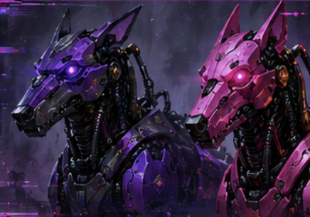
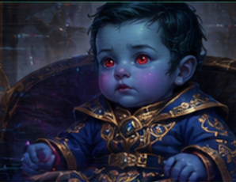

01 // GREETING
Captain Visto,
please forward this to the rest of Khor Atlas at your earliest convenience. Looks like I’ll be seeing you again soon. I look forward to the Nothoiin Chimera’s ardent dedication to hospitality.
ENCRYPTED // PRIORITY // HOLO-NET RELAY
SL1C3 // SECURE PACKET DIRECTORY
Select a folder to decrypt and open its contents.
ENCRYPTED // PRIORITY // HOLO-NET RELAY
Transmission to the Nothoiin Chimera

I was directed to inform you all that once we have the data spikes fully replicated, I will be joining you once again for a final assignment.
The data spikes are unfortunately not just usable anywhere; it will require infiltrating a hidden ISB data vault stronghold in the fringes of Wild Space, II-0810 Satellite Station.
This is where all Holo-net monitoring and data farming is kept, and that is where you'll be able to wipe yourself from the net, making yourself a ghost in the galaxy.
